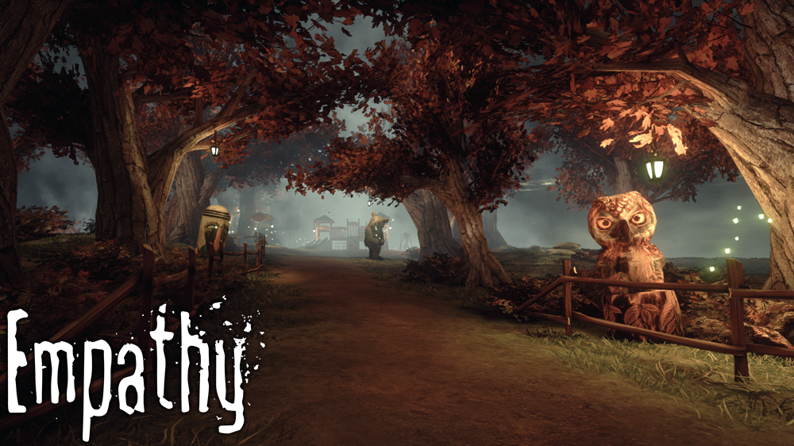

Anton Pustovoyt
Web developer from Stockholm, Sweden. anton.pustovoyt[at]gmail.com
Web and game developer from Stockholm, Sweden.
Works (newest first):
anton.pustovoyt[at]gmail.com
Xlash
CSS, SASS, Javascript, Wordpress, responsive design, WooCommerce, e-commerce
Front-end development of an e-commerce onepage site for Xlash mascara. Includes a shop, FAQ and contact features
xlash.net{kind=link}
Rhapsody in Rock
CSS, SASS, Javascript, Wordpress, PHP, APIs, git
Front-end and partly back-end development of a page for Robert Wells' Rhapsody in Rock world tour. I was responsible for front-end development, google API integration and some backend
rhapsodyinrock.se{kind=link}
The Bucket list
SASS, Javascript, mySQL, PHP, Wordpress, SEO, git
Development of a bucket list website where users could register, create articles with interesting achivements or destinations, and add them to their bucket lists as well as share them with each other. The website supports ads and editorial articles. I was responsible for design and front-end development, as well as some back-end funtionality such as user profiles and plugins.
bucketlist.se{kind=link}
Elskling
webdesign, UX, photoshop
Website re-design for elskling.se. The challenge was to update their current look while preserving the cozy home atmosphere you felt as a visitor and the original theme colors of the company.
{kind=link}
Ashes of Mankind forum
CSS, SASS, Javascript, Wordpress, responsive design, PHP, phpbb
Design and development of an online phpbb based forum for a MMO game, Ashes of mankind. Includes responsive design.
ashesofmankind.com (currently not live){kind=link}
Ottoboni intranet
sass, html5, compass, Javascript, jQuery, responsive design, EPiServer, git
I was tasked with front-end re-design of Ottoboni's existing intranet framework in order to adapt it to the company's graphical profile, including a responsive mobile version. I had no back-end support available, which resulted in some compromises when it comes to the elements and functionality.
{kind=link}
Telia Sonera
sass, html5, grunt, javascript, responsive layout
I developed a promotion page for Telia's summer campaign within an existing framework for Telia pages.

Able lounge
css, html5, wordpress, photoshop, web-design
I designed a webpage for a beauty and lifestyle company, mockup of which was later implemented in wordpress with parallax scrolling.
{kind=link}
Streetlevel Culture
css, html5, mySQL, wordpress, photoshop, web-design
I designed and developed a webpage for a couple of fashion designed and photographers from New York. They required a very minimalistic look, with certain uncommon elements such as horizontally scrolling image gallery.
http://streetlevelculture.com/home/{kind=link}
Eventon
css, html5, php, mySQL, uml, web-design
This was an early school project, where we were tasked with making a new classroom/lessons management system for the school. My group and I decided to take it one step further, by adapting the system to be as generic as possible so it could be used for any kind of event management. I designed and developed the logic, database, and partly backend.
https://github.com/Cronnix/eventon{kind=link}
NinjaPvP
Game design, UX design, monetization, core loops, Unity
NinjaPvP is a free-to-play online action game. I joined the project when it already was in alpha, and re-made the core design of the game from ground up which resulted in more entertaining and funnier gameplay. I was also responsible for designing the monetization system.
http://www.ninjapvp.com/
Empathy
Game design, 3D art, UX design, project management, level design, scripting, Unreal Engine
My most ambitious project to date, which is still under development and will continue being so for a while. Empathy is an adventure game set in a dying world, where you play as a child who can change the world through emotions. Empathy focuses on the human aspect of the story, featuring visual storytelling. I was the game designer, project manager in a group of five developers, and the level designer as well as helping with 3D assets.
http://www.indiedb.com/games/empathy Ashes of Mankind
Game design, UX design,
Ashes of Mankind is a multiplayer PvP game, to which I contributed with game design. It's currently in alpha.